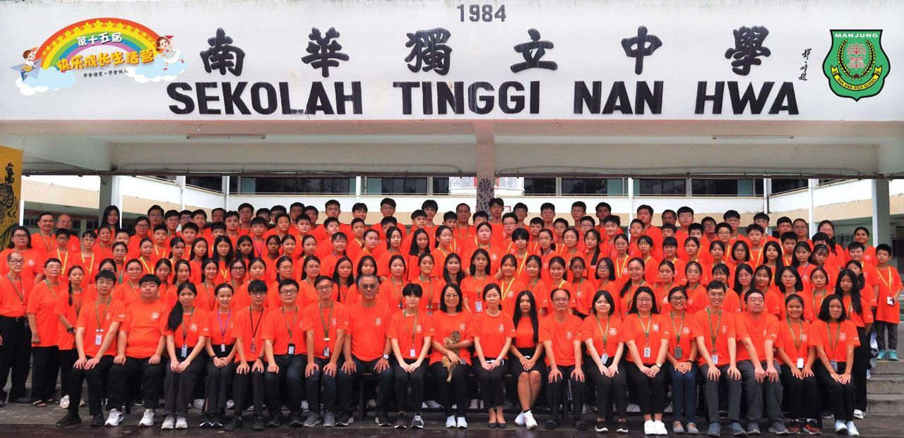
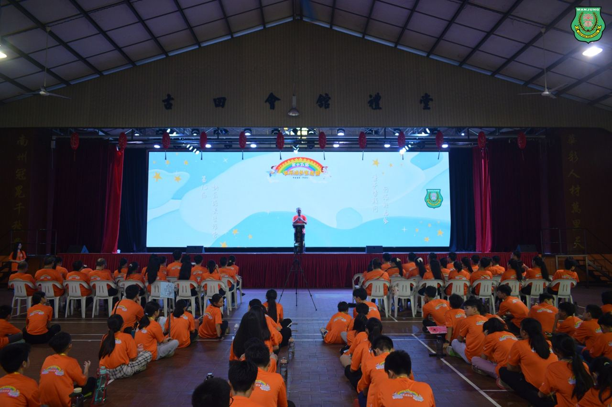
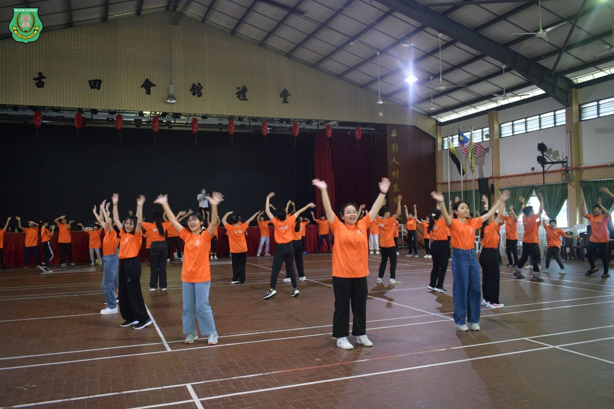
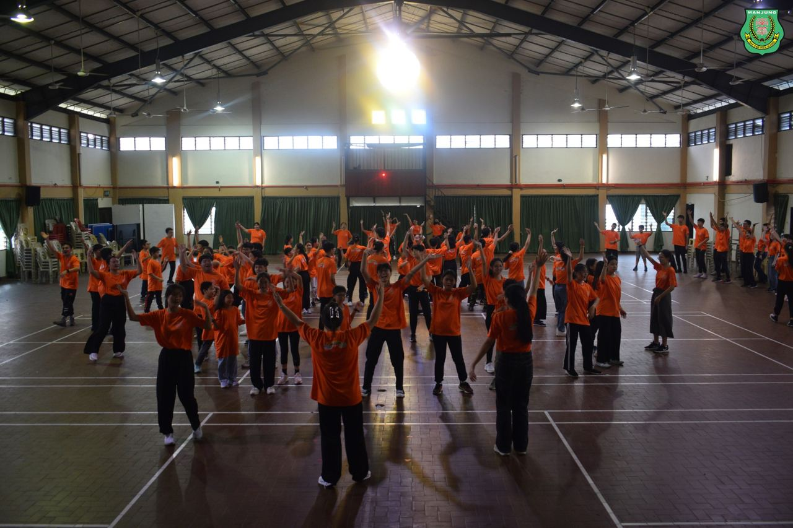
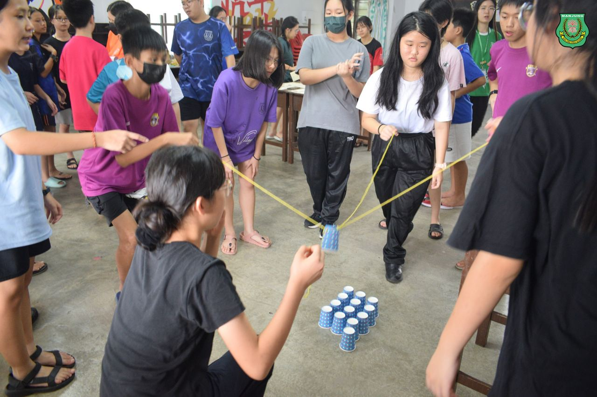
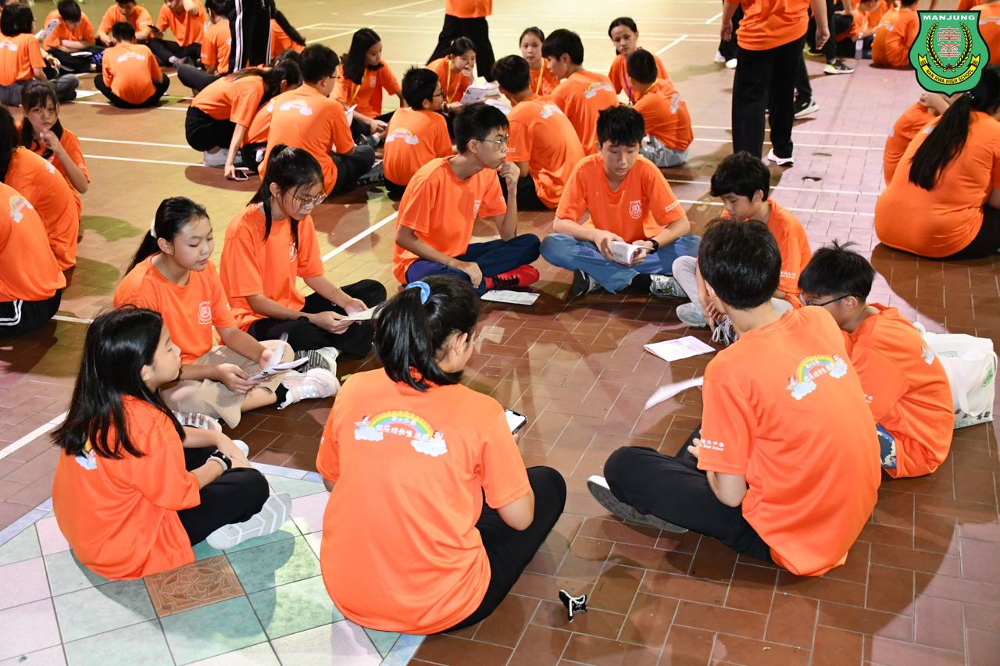
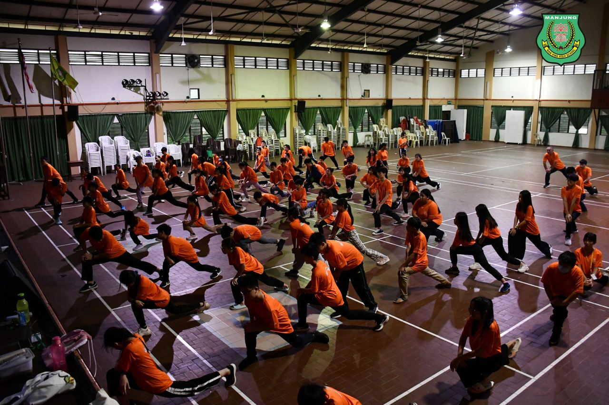
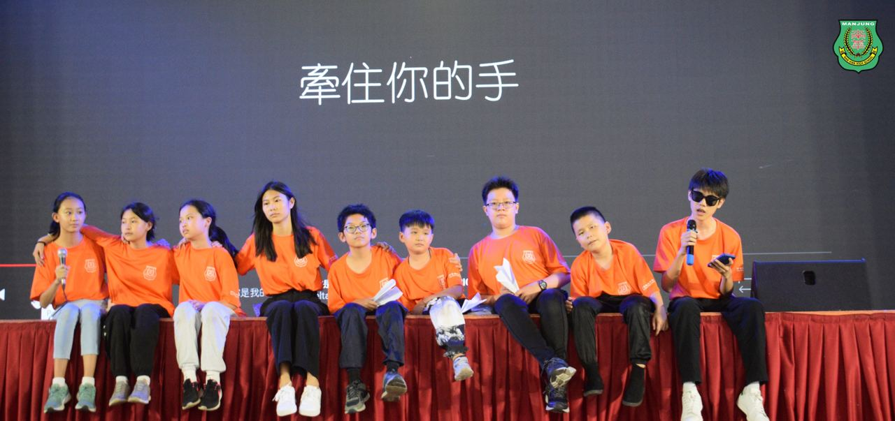

26所学校 61位营员齐聚三天两夜
26所学校 61位营员齐聚三天两夜
第15届快乐成长生活营圆满落幕
由曼绒南华独中师生于日前举办了“第十五届小六快乐成长生活营”，其宗旨为培养学生优良的品德，灌输正确的价值观，助学生健康快乐成长，促进学生的联系，扩大生活圈子，培养学生之间友爱及团结的精神，共吸引来自26所学校、61位营员报名参加共三天两夜的生活营。
生活营中准备了鼓励学生积极正面、自主探索、动手制作与的成长工作坊、趣味体验课、三字经诵读、激励讲座、团康游戏及节目，例如：印度米绘、中国结、科学实验、美术拓印等。
快乐成长生活营顾问暨南华独中董事总务何添胜先生在开幕仪式上致辞表示，南华独中秉持着传承中华文化的优良传统，正如生活营每日早上安排营员诵读《弟子规》是为了向圣人学习谦卑的态度，学成以后更要懂得传授与分享。何添胜董事表示，我们唯有在了解自己民族文化的根，吸收博大精深的文化底蕴以后，才能培养出可以在全世界立足的文化自信。
快乐生活营主席暨南华独中校长陈丽冰博士致辞中以“快乐中学习，学习中快乐”勉励第十五届的营员们，希望营员们能够在短短的三天两夜中，借由使用南华独中的硬体设备以及走访校园，从中领略学习的乐趣。她强调“快乐”与“成长”是两个单独却又相辅相成，相映成辉的概念，希望透过这次的营会，让孩子们在欢乐中充实与壮大自己。
#快乐成长生活营 #成长工作坊 #趣味体验课
#南华独中 #曼绒 #实兆远







